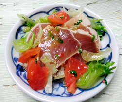

炙りマグロのカルパッチョ
- 調理時間：20分
- （一人当たり）
- カロリー：170kcal
- たんぱく質：14.8g
- 脂質：8.4g
- 炭水化物：8.3g
- 塩分：1.3g


＜2人分＞
- マグロ
（赤身の刺身用・柵） - 1柵
- 新タマネギ
（薄切りにして水にさらす） - 1/4個
- セロリ（薄切り）
- 50g
- レタス
（食べやすい大きさに） - 2枚
- トマト（くし切り）
- 1個
- 青ネギ（小口切り）
- 20g
- ・オリーブ油
- 大さじ1
- ・醤油
- 大さじ1
- ・バルサミコ酢、または食酢
- 大さじ1
A


- マグロのまわりに塩、こしょうをつけ、焼き網かフッ素樹脂加工のフライパンで油なしで焼く。
まわりに焼き色がついたら冷水にとった後、水気を拭く。 - Aのドレッシングの材料を合わせておく。
- 新タマネギ、セロリ、レタス、トマト、青ネギは各々、切る。
- ①を1㎝厚さに切り、③の野菜と共に皿に並べ、ドレッシングを回しかけて完成。
炙りマグロのカルパッチョ
中医学では、春は肝臓を病みやすいため注意が必要だと言われており、肝臓には血液を蓄えておく役割があります。植物が芽吹くときにエネルギーを欲するように、私たちもその原動力として血液が必要です。鉄分をしっかり摂って貧血予防を心掛けましょう。
今回レシピに使用した、赤身のまぐろには鉄分が豊富に含まれています。マグロに含まれる鉄は「ヘム鉄」といい、吸収率が65%ほどと高いのが特徴です。新玉ねぎには、たんぱく質分解酵素のプロテアーゼが含まれます。マグロに添えていただきましょう。